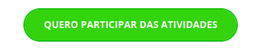
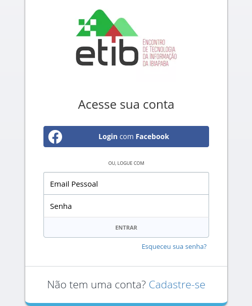

Sobre o ETIB
Na 4º edição do Encontro de Tecnologia da Informação da Ibiapaba - ETIB serão trabalhadas as temáticas de empreendedorismo com palestras e minicursos com a participação de docentes convidados, discentes de cursos de tecnologia e profissionais de empresas do ramo tecnológico.Como participar?
Para participar você deve acessar a página do evento no Even3 e clicar em ‘Quero participar das atividades’.

Você será levado para uma página de login e caso não tenha conta, pode criá-la usando o facebook ou email.

Após criar a conta, na página do evento no Even3, selecione quais atividades deseja fazer, atentando-se ao horário e disponibilidade das mesmas. Isso é necessário para que você receba seu certificado por concluir a atividade escolhida.